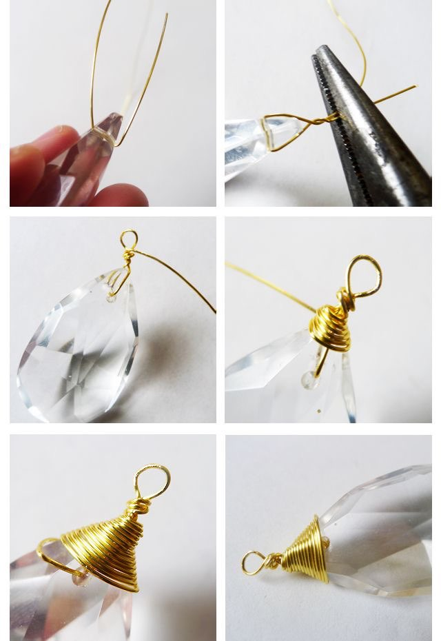
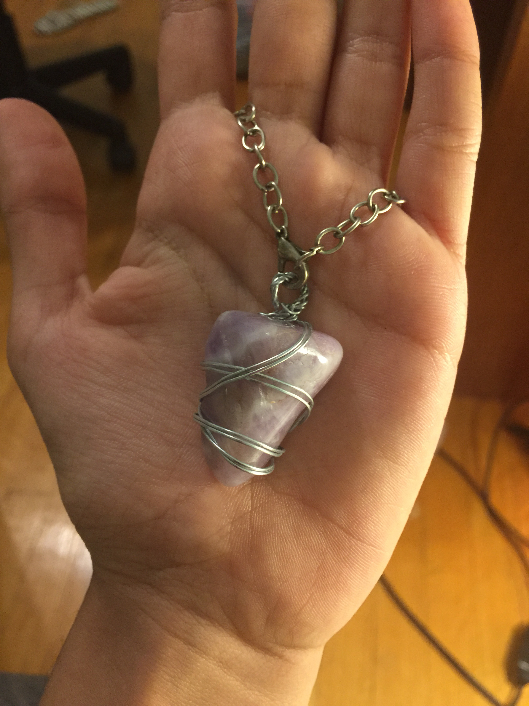

Wire jewelry is the first form of art I can remember spending a lot of time on. I still remember the first time I used needle nose pliers. My dad was experimenting with ideas for new products and playing around with old necklaces and beads, and I would not leave him alone. I love rooting around in my basement because, as a self-proclaimed lover of shiny things, it feels like a treasure hunt for any new trinkets or accessories I can find. So, I refused to leave my dad alone and observed how he would take apart pieces to create something completely new. After he became busy with something else, I took the pliers and started playing around with whatever he left behind. And thus, my first piece was created: what I dubbed a “bead person.”
 I went in many different directions with wire jewelry, but the one I gravitated toward the most was wire wrapping. I liked the amount of creativity and freedom I had with wire wrapping, and each project was a different shape, size, and color than the last. I would often take rocks I found in my backyard and make pendants out of them. Besides that, I spent much time either in my room or downstairs fiddling with my creations. Pinterest was a huge source of inspiration, but many of my projects were my own thinking based on what I could find around the house. When I used Pinterest, those projects ended up being very similar or emulating my inspiration post. I love wire jewelry because, even though it’s not very portable and it’s better suited to do it in one go, it's very easy to whip up something new whenever the whim strikes me. Plus, I always end with jewelry that is one-of-its-kind!